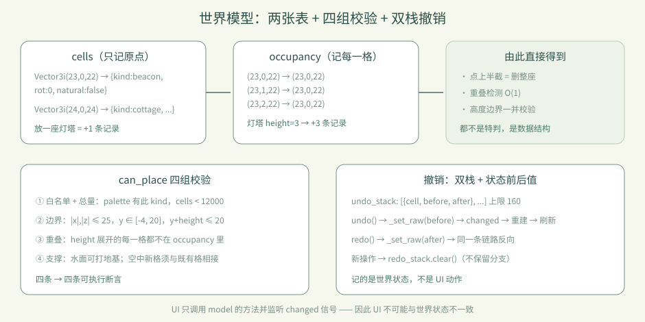
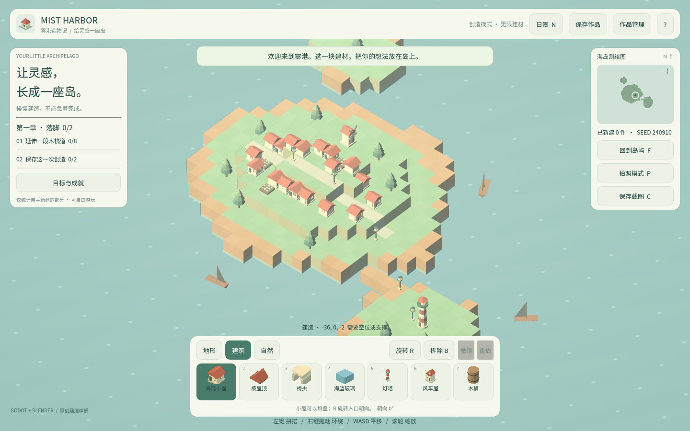
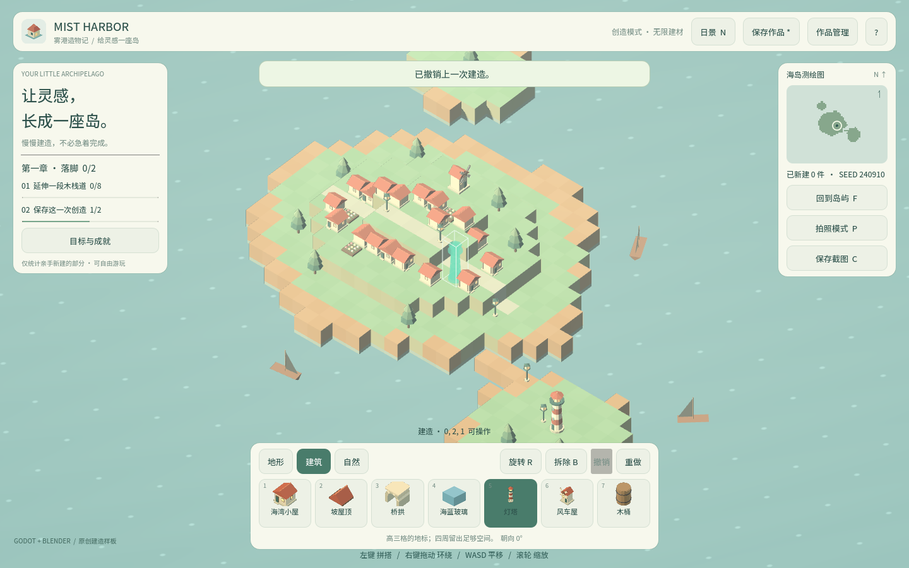

卷 1 · 第 06 章 世界模型：格子、高度、占位与撤销
本章目标：理解《雾港》为什么能"放了就能撤销、高处不能悬空"——
全部答案都在project/scripts/world_model.gd的数据结构里。
对应任务：T16 / T17 | 对应文件：project/scripts/world_model.gd
6.1 世界就是两个字典
var cells: Dictionary = {} # Vector3i -> {"kind":String,"rot":int,"natural":bool}
var occupancy: Dictionary = {} # Vector3i(被占用的格) -> Vector3i(它属于哪个原点)cells只记录原点格（模型的左下后角）occupancy记录模型占住的每一格（含上方的格），值指向它的原点
为什么要两份？因为两个问题回答起来都必须是 O(1)：
"这一格放了什么？"（occupancy 反查 cells）与 "这个模型占了哪些格？"（按高度展开）。

高度：每种建材在 palette.json 里声明 height（占几格）。灯塔 3 格、树/灯/风车 2 格、其余 1 格。
所以删除"灯塔的上半截"，整座灯塔都会消失——这是 occupancy → cells 的直接后果，也是一条测试断言。
6.2 放置规则：四组校验
func can_place(cell, kind) -> bool:
if not palette.has(kind) or cells.size() >= MAX_CELLS: return false # ① 白名单 + 总量
if not in_bounds(cell, height): return false # ② 边界（±25 / y -4..20）
for dy in height:
if occupancy.has(cell + dy): return false # ③ 重叠
# ④ 支撑：水面可直接打地基；空中的新格必须与既有格相接| 规则 | 常量/来源 | 对应断言 |
|---|---|---|
| --- | --- | --- |
| 建材必须存在、总量不超 | palette / MAX_CELLS=12000 | "unknown material rejected" |
| 边界 | EDGE=25 MIN_Y=-4 MAX_Y=20 | "world bounds enforced" / "height bounds enforced" |
| 重叠 | occupancy | "cannot intersect tall model" |
| 支撑 | 邻接检查 | "unsupported midair cell rejected" |
📌 这四条不是"游戏感觉"，是四条可执行断言。改任何一条，测试会立刻告诉你。
6.3 撤销：命令模式 + 双栈
每次成功操作都记一条"命令"：
undo_stack.append({"cell": cell, "before": before, "after": after.duplicate()})undo()：把cell恢复成before，弹入redo_stackredo()：反向重放- 新操作会清空
redo_stack（这是刻意设计：分支历史不保留） - 上限
MAX_HISTORY = 160，超出从队首丢弃
为什么撤销是"数据问题"而不是"UI 问题"？ 因为 UI 只负责调用 model.undo()；
真正的状态在 cells/occupancy 里，UI 通过 changed 信号被动刷新。任何 UI 都不可能和世界状态不一致——
这就是本实训敢把撤销写进断言的原因。
6.4 一条完整的链路（放下一间小屋）
玩家点击 → main.gd 计算目标格 → model.place(cell, "cottage", rot)
→ can_place 四组校验 → _set_raw 写 cells/occupancy → _touch()
→ changed 信号 → build_world 重建网格 → UI 刷新计数撤销时走同一条路的反向：undo() → _set_raw(before) → changed → 重建 → 刷新。
没有"特判的 UI 回滚"。
6.5 常见坑速查（本章）
| 现象 | 原因 | 处理 |
|---|---|---|
| --- | --- | --- |
| 删上半截导致整座消失 | 多格模型由 occupancy 统一管理 | 这是正确行为，见断言 |
| 撤销后 UI 不刷新 | 没触发 changed 信号 | 所有写操作都要走 _set_raw/_touch |
| 空中放不下 | 支撑规则 | 先连到既有格，或从水面起地基 |
| 撤销步数不够 | MAX_HISTORY=160 | 调整常量并同步测试断言 |
| 加了高建材却穿模 | palette.height 没同步 | 改 palette 后重跑测试 |
6.6 本章作业
- 画出
cells与occupancy的关系图（放一座 3 格灯塔后，两张表里各有几条记录？） - 为"新操作会清空重做分支"写一条断言并跑通
- 把灯塔的
height从 3 改成 4，跑测试，观察哪些断言报警（然后改回） - 回答：为什么删除"灯塔上半截"要整座消失？
🎓 教学提示（给教师 / 直播主）
- 概念锚点：先有数据结构，再有玩法。撤销/重叠/支撑都是数据结构的副产品。
- 课堂演示：现场改
palette.json里灯塔的height，跑测试看哪些断言红——
这是讲"数据驱动 + 断言保护"最直观的演示。
- 高频误解：学生以为撤销是"记住 UI 操作"。强调它记的是世界状态的前后值。
- 进阶讨论：为什么
redo_stack要清空？（保留分支会让状态机复杂化，且用户心智负担大） - 批改要点：作业 1 必须算对数量（灯塔：cells +1，occupancy +3）。
🖼 本章图集


📹 录屏分镜（10 分钟）
| 时间 | 画面 | 解说词要点 |
|---|---|---|
| --- | --- | --- |
| 00:00–01:30 | 两个字典的代码 + 示意图 | "世界就是两张表。" |
| 01:30–03:30 | 放灯塔，逐格 occupancy 高亮 | "高模型占多格，删一格整座没。" |
| 03:30–05:30 | 四组校验代码逐段 + 断言名 | "每条规则都有断言守着。" |
| 05:30–07:30 | 撤销/重做演示（含新操作清分支） | "撤销记的是状态，不是动作。" |
| 07:30–09:00 | 现场改 height 看测试变红 | "数据一改，断言立刻告诉你。" |
| 09:00–10:00 | 作业 + 预告（数据驱动三张表） |
🎬 视频位（待录制）
把录好的视频放到course/media/video/06/（mp4 / webm / mov），重新执行 python tools/course_build.py 即会自动内嵌；首帧默认用本章第一张截图作为封面。分镜脚本见上一节。🖼 配图清单
| 文件名 | 内容 | 生成方式 |
|---|---|---|
| --- | --- | --- |
06-start.png | 起始画面 | python tools/course_capture.py --chapter 06 |
06-beacon-placed.png | 放下灯塔（3 格高度） | 同上 |
06-undo.png | Ctrl+Z 之后（灯塔消失） | 同上 |
🎥 直播脚本（L3 片段，15 分钟）
- 挑战开场："我故意在世界模型里埋了一个 bug，看谁能先找到"——现场演示撤销不刷新 UI
- 演示：修掉（缺
changed信号），讲"数据驱动 UI" - 互动：让观众猜改
height会让几条断言变红 - 收尾：布置作业 3（改 height 观察报警）
❓ 本章 FAQ
Q：为什么不用数组/八叉树而用字典？
A：世界是稀疏的（大部分格子是空的），字典按坐标直接命中，O(1) 且实现简单；
12000 上限下内存与性能都够。
Q：撤销栈为什么是 160？
A：产品权衡——足够覆盖一次建造会话的操作量，又不至于无限增长。它是常量，可按需调整。
Q：多格模型的旋转会影响占位吗？
A：占位按高度（Y 轴）展开，旋转只影响朝向，不影响占格数量。